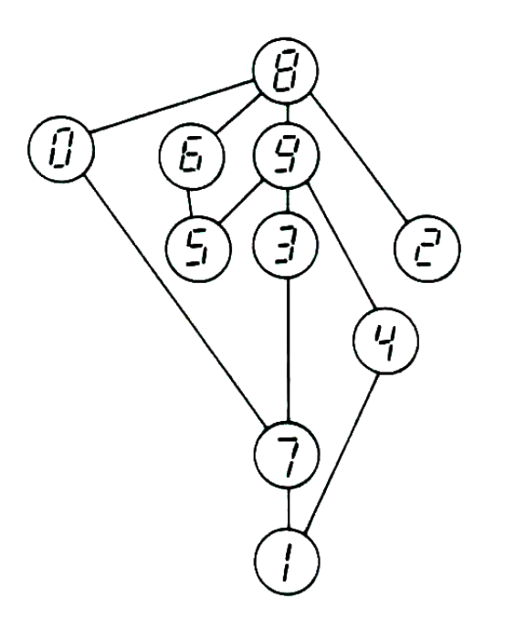

4
İlk yanıtta erkek, dişi ve çift cinsiyetli çocuk oranlarının her daim 1:1:1 kaldığını görmüştük. Kanun yüzünden her annenin sadece bir çift cinsiyetli çocuğu vardı. 1:1:1 oranının korunması için anne başına erkek çocuk ortalamasının da, kız çocuk ortalamasının da 1 olması gerekir. Bu da anne başına ortalama 3 çocuk demektir.
NOT
Byronia problemi, George Gamov ile Marvin Stern tarafından hazırlanan Puzzle-Math adlı harika problemler dizisinde bulduğum bir aile problemine yaptığım genelleştirmedir.
1 + 2/3 + 4/9 + 8/27 + … sonsuz dizisinin limitinin nasıl bulunacağını merak ediyorsanız basit bir yolunu gösterelim.
Diyelim ki x, ilk parçanın dışta bırakıldığı sekans olsun. Yani:
x = 2/3 + 4/9 + 8/27 + …
Her parça, bir öncekinin 2/3’üdür. Her iki tarafı 2/3 ile çarparsak:
2x/3 = 2/3 (2/3 + 4/9 + 8/27 + …)
2x/3 = 4/9 + 8/27 + 16/44 + …
Sağdaki dizi x – 2/3’tür. Bu durumda şöyle yazabiliriz:
x = 2x/3 + 2/3
İşlem yapıldığında x için 2 değeri çıkar ve x, orijinal dizi eksi 1 olduğundan, dizinin limit toplamında 3 elde etmek üzere 1 ekleriz.
6
Süreç 2 mikropla başlarsa her saatin sonunda sayı, 1 mikropla başlayan sekanstaki sayıların iki katı olacaktır. 48 saat sonunda iki kat mikrop sayısı kabın 1/7’sini doldurmaya yetmeyeceğinden doğru yanıt 49 saattir. Bu noktada kabın 2/7’si dolmuş olacaktır.
NOT
Bu problemin ikinci ve üçüncü çeşitlemeleri yenidir. İkincisi arkadaşlarla denemeye pek uygundur çünkü çoğu kişi 49’u 7’ye bölerek gayet alakasız bir sonuca ulaşır. Wells’in öyküsünü bilen okurlar Montgomery’nin Dr. Moreau’nun asistanı olduğunu hatırlayacaktır.
7
Herhangi bir grafikte bir “ilmik” (bir noktayı kendisine bağlayan hat) noktaya iki çizgi daha ekler. Dolayısıyla noktanın çiftliğine veya tekliğine etki etmez.
NOT
Bu öykünün temeli, hızlı düşünmesi, özgünlüğü, satrançtaki ustalığı ve geniş matematiksel fıkra, numara ve karikatür koleksiyonuyla ünlü Kanadalı matematikçi Leo Moser’den duyduğum bir fıkraya dayanıyordu. IASFM aile dergisi kabul edildiğinden, orijinal fıkra pek uygun kaçmayacaktı. O yüzden editörümüz ikili ilişkiyi el sıkmaya dönüştürdü…
8
Teğmen Flarp’ın “Nasıl susamışım!” diye başlayan konuşması ünlü İngiliz astronom Sir James Jeans’in bulduğu bir pi hatırlatıcısıdır. Cümlenin İngilizcesinde her sözcükteki harf sayısı pi sayısının basamaklarından birini göstermektedir.
NOT
Matematikteki pek çok zarif problem, problemin sahiden bir çözümü olduğu varsayılırsa çabucak çözülebilir. Buradakine gayet yakın, üç boyutlu bir klasik örnekte katı bir kürenin tam ortasından delinen bir silindirik delikle ilgilidir. Deliğin uzunluğu 6 inçtir. Kürenin kalan hacmi nedir?
Bu problem zor yoldan hesapla çözülebilir ama kestirmeden gidelim ve bir sonucun olduğunu varsayalım. Varsa, hacim deliğin uzunluğuna bakılmaksızın bir sabit olmak zorundadır. Deliğin yarıçapını sıfıra indirelim. “Kalan” 6 inç çapında ve 36 çarpı pi hacminde bir küre olacaktır. Problemin tek bir sonucu varsa bu olmalıdır.
14
Robotlardan herhangi birine şu soru sorulur: “Sana erkek misin yoksa dişi misin diye sorsaydım ve diğer iki arkadaşın da bu soruya aynı yanıtı vermiş olsaydı, yanıtın onlarınkiyle aynı mı olurdu?”
Doğrucu hayır, yalancı evet demek zorunda kalacak, bazen doğru bazen yalan söyleyense, arkadaşlarının (biri yalancı, biri doğrucu) aynı yanıtı veremeyeceklerini bildiğinden yanıt veremeyecektir. Bu soruyu robotlardan herhangi ikisine yöneltmek suretiyle kimlikleri ortaya çıkacak, haliyle üçüncününki de anlaşılacaktır.
“İtiraf etmeliyim,” dedi İzomorf, “bazen doğru, bazen yanlış söyleyen robot evet veya hayır yanıtı verebilirdi ve iki yanıt da bir parça yalan olurdu. Ama sorunun bazen doğru, bazen yanlış söyleyen robotu bir yanıt verecekse vermeden önce en azından uzun süre düşündüreceğini varsaydım. Dolayısıyla bunun ilk problem için geçerli bir iki-sorulu çözüm olduğunda ısrarcıyım.”
NOT
Oz hayranları Profesör Tinker’ın tam adının hem Oz kitaplarının ilk serisini yazan Lyman Frank Baum’dan hem de Smith ve Tinker firmasındaki Bay Tinker’dan geldiğini fark etmişlerdir. Amerikan edebiyatında görülen ilk robotlardan Tiktok’u yaratan Tinker’dı. Baum Tiktok’u ilk defa üçüncü kitabı Ozma of Oz’da ortaya çıkarmıştı. Asik İzomorf’un adı elbette Isaac Asimov şerefine kondu.
Bulmaca edebiyatı doğrucular, yalancılar ve bazen doğru bazen yalan söyleyenlerle ilgili problemlerle doludur.
Aaron J. Friedland yolladığı mektubunda tek soruyla doğrucu, yalancı, bazen doğru-bazen yalan söyleyen ve en yaşlı robotun yanı sıra istenen her türlü bilginin edinilebileceğini söylüyor. Önerdiği, herhangi bir robota sorulacak soru şu: “Size ‘Hanginiz doğrucu, hanginiz yalancı, hanginiz bazen doğru, bazen yalan söylüyor ve hanginiz en yaşlı?’ diye sorsam ve vereceğiniz yanıtlar şimdi sorduğum bu soruya vereceğiniz kadar doğru olsa hangi mümkün yanıtlar dizisini verebilirdiniz?”
15
Başlangıçta taş sayısı çift sayılı olursa, oyun nasıl oynanırsa oynansın berabere bitecektir. Hiçbir çift sayı bir çift sayıyla tek sayının toplamı değildir; dolayısıyla çift sayıda taşla başlanan bir oyun her iki oyuncunun da elinde tek veya çift sayıda taş kalmasıyla bitecektir.
Tabii oyun planını oyunculardan birinin dairenin içinden, diğerinin dışından başlayacağı ve iki başlangıç noktası arasında çift sayıda nokta bulunacağı şekilde çizmek mümkündür. Bunun oyunu çift sayıda taşla oynamaktan ve oyunculardan birisine başlangıçta tek bir taş vermekten farkı yoktur. Oyunun temel karakterini değiştirmez.
17
Problem küre yüzeyinde çözülemiyor. Bir çözümün bulunduğunu ve kürenin de lastik olduğunu varsayalım. Küreyi şeklin çizgilerine veya bulmacayı çözen çizgiye gelmeyen bir yerinden deldiğimizde küre bir düzlemsel yüzey oluşturacak şekilde çekilip uzatılabilir. Çekip uzatma şeklin topolojik özelliklerinde değişim yaratmayacağından düzlem üzerinde çözüm üretecektir. Ancak daha önce gördüğümüz üzere düzlem üzerinde çözüm yoktu. Haliyle küre üzerinde de çözüm olması mümkün değildir.
NOT
Kökeni bilinmeyen bu problemin orijinal hali, topoloji bilmecelerinin en eski ve en beğenilenlerinden biridir. Benden önce bu köşeyi hazırlayan Sam Loyd gibi ben de bulmacayı çözemeyen okurlardan sürüyle mektup alıyorum. Çözümünün bulunmadığının kanıtı, bir “parite kontrolünün” (tek ve çift sayılar temelinde bir kontrol) zor görünen bir soruyu nasıl çabucak yanıtlayabileceğinin en basit, en zarif örneklerinden biridir.
Bildiğim kadarıyla, fazla önem taşımamakla birlikte, bu bulmacanın bir torus şekli üzerinde çözülebileceğini 1957 yılında Scientific American’daki köşemde ilk belirten benim. Ronald Couth’un ismi, Stanford Üniversitesi’nin önde gelen bilgisayar bilimcilerinden Donald Knuth’tan geliyor.
19
Anlatıda Kontes Drakula’nın eşini aynadan izlediği söyleniyordu. Her okurun bildiği veya bilmesi gerektiği üzere vampirlerin aynada görüntülerinin yansıması söz konusu değildir.
NOT
Özünde aynı numarayı kullanan yüzlerce iskambil numarası mevcut. Arkadaşlarınızla uygulayabileceğiniz hoş bir örnek daha verelim:
Numarayı yapmadan önce 52’lik bir desteyi tam ikiye bölün. Yarılardan birini tersyüz edin ve yüzleri yukarı bakan 26 kartla aşağı bakan diğer 26 kartı karıştırın. Numaraya başlarken elinizdeki destenin yüzleri yukarı ve aşağı bakan kartların bir karışımı olduğunu gösterin ama kaç kartın tersyüz olduğunu söylemeyin. Desteyi bir arkadaşınıza karıştırtın ve bitince masanın altından size vermesini söyleyin. Kartları gene tam ikiye ayırarak masa üstüne çıkarın ve her iki elinizdeki iki eşit yarım destede de aynı sayıda yüzleri yukarı dönük kart bulunduğunu söyleyin.
İşin püf noktası: Masanın altında sayarak 26’lık iki deste ayırdıktan sonra desteleri masaya koymadan önce ikisinden birini ters çevirin. Neden, anlıyor musunuz? Yarım destelerden birini tersyüz etmeden önce, her iki yarım desteden birinde bulunan yüzü yukarı dönük kart sayısı, diğerindeki yüzü aşağı bakan kart sayısına eşit olmak durumundadır. Destlerden herhangi birinin tersyüz etmek, yüzü yukarı bakan kartları aşağı baktıracaktır. Böylece her iki yarım destedeki yüzü yukarı bakan (veya aşağı bakan) kart sayısı eşitlenecektir.
21
Virüs elbette yapaydı ama uzaydan gelmemişti. MIT (Massachussets Teknoloji Enstitüsü) yakınlarındaki Yapay Zekâ Laboratuarındaki bir biyologlar grubu, şifreli mesajların yapay virüslerle taşınıp taşınmayacağını ortaya çıkarmayı amaçlayan gizli bir askeri proje üzerinde çalışıyorlardı. Projenin başında ünlü bilimkurgu ve Bilim yazarı Isaac Asimov’un torunlarından Isaac Asimov III vardı. Ters çevrildiğinde Yapay Zekâ’nın baş harflerini vereceklerini bilerek DNA sekansında kendi adının baş harflerini kullanmıştı. Asistanlarından biri virüsün bulunduğu kabı düşürmüş, kap çatlayınca virüs numuneleri Harvard’a yayılmıştı.
NOT
Bulmacada adlarını zikrettiğimiz iki Japon biliminsanı gerçek kimselerdir. Adları Hiromitsu Yokoo ve Tairo Oshima’dır. Virüslerin dünya dışı bir uygarlığın şifreli mesajlarını taşıdığına dair varsayımları 1979 Nisan’ında güneş sistemini incelemeye yönelik çalışmalarla uğraşan uluslar arası astronomi dergisi Icarus’ta yayınlanmıştır.
Walter Sullivan’ın ikilinin çalışmalarına dair anlatısına göre (7 Mayıs 1979’da New York Times’ta yayınlanmıştır) Yokoo ve Oshima bu ilginç teoriye bakterilere bulaşan PhiX-174 adlı bir virüsün genetik sekansının doğaldan çok yapay görünmesini keşfetmelerinden sonra varmışlardır.
Problemimde açıkladığım üzere genetik bilgiler DNA molekülüne dört harflik bir “alfabe” kullanan üç harflik “sözcüklerle” kodlanır. Japon ikili dünya dışı zeki varlıkların kodlu mesajları bir gezegene sinyaller yerine, kolayca çoğalacak virüslerle yollamayı daha uygun bulabileceklerini öne sürmüşlerdi. PhiX-174’te herhangi bir mesaj bulamamışlardı ama diğer virüslerde kodlu mesajların aranması gerektiğini söylüyorlardı.
22
Tanya’nın içteki üçgeni çevirme numarası burada da işe yaramakla birlikte çevrilmiş üçgenin üste gelen köşelerinin, elipsin kavisinin dıştaki üçgenin kenarlarının teğet geçtiği noktalarına denk geleceğinin kesinliği açık değildir.
Ancak afin (ilgin) geometriye aşinaysanız bir şeklin ilgin “uzatılması” veya “büzülmesinin” alan oranlarını değiştirmediğini hatırlarsınız. İki odağının üst üste gelene dek büzülmesi elipsi, iç ve dışındaki üçgenleri de eşkenara çevirerek bir daireye dönüştürecek ve orijinal Titan simgesini ortaya çıkaracaktır. Alan oranları dairenin elipse uzatılmasında korunduğundan iki ikizkenar üçgenin alanlarının birbirine oranı önceki gibi 1’e 4’tür.
NOT
Orijinal problemin kökenini bilmiyorum. İkincisini Iowa’dan Daniel R. Royalty yolladı. Üçüncü çeşitlemeyse bana ait. Bu arada Larc Snaag’ın adı ünlü Carl Sagan’ın bir anagramı…
Hâlihazırda Titan, güneş sistemi içinde yaşam barındırma ihtimali en yüksek yer olarak görünüyor.
25
2001 Uzay Macerası adlı filmdeki bilgisayar HAL’i hatırlıyor musunuz? HAL’in harflerini birer ilerlettiğinizde filmde logosu bilgisayar üzerinde açıkça görünen IBM’e ulaşırsınız. VOZ’un harflerini on üçer adım oynattığınızda (alfabeyi dairesel düşünün) yine IBM çıkacaktır.
On üç, yirmi altının yarısı olduğundan dönüşümü daha dramatik tasvir edebiliriz. Alfabenin yirmi altı harfini (İngiliz alfabesi) bir daire şekilde dizin ve VOZ’un harflerinin çapa göre karşılıklarını bulun…
NOT
Bulmaca IASFM’de ilk yayınlanışından sonra epey gözden geçirilmiştir. O sıralarda çifte garip sekansın 284 sayısını tekrarladığından habersizdim. Ohio’dan Karl Fox’un bana yazdığı mektupla öğrendim. Orijinal sekansta tekrar mümkün değil çünkü ilk sıradaki her sayı henüz kullanılmamış en küçük tamsayının seçilmesiyle belirleniyor. Daha yüksek katta sekansların bulunmadığını kanıtlamak veya böyle bir ya da daha fazla sekans bulmak epey zor iş.
26
Suzie erkek arkadaşına her elde 1 ozmufluk tek fişle tek renge oynamasını söyleyip diğer renge 100 ozmuf koydu!
NOT
Birini problem, birçok geçişsiz paradoksun önseziye en ters olanlarından biri üzerine kurulu. A’yı B’ye ve B’yi C’ye bağlayan ikili bir ilişki A ile C’yi zorunlu bağlıyorsa bu ilişkiye geçişli denir. Mesela A, B’den uzun ve B de C’den uzunsa A, C’den uzun olmak zorundadır. Dolayısıyla “şu şundan daha uzun” ilişkisi geçişlidir.
Sezgi bize A üçlüsünün B üçlüsünü, B üçlüsünün de C üçlüsünü yeneceğini, dolayısıyla A’nın C’yi yeneceğini söyler. Ancak buradaki vakada ilişki geçişsiz olduğundan iş değişmektedir.
New Hampshire’dan David VomLehn, Şeytan’ın Vegas öyküsüne şu devam bölümünü yolladı: Sabaha doğru Harvard’lı öğrenci tuhaf bir şeylerin döndüğünü hisseder. Kuşkusunu sınamak amacıyla aynı rulet oyununda oynayan bir başka kumarbazla ikincil bir bahse tutuşur. Rulet topu yivlerden birine girdiği anda evren birdenbire donakalır. Neden?
VomLehn, öğrencinin bir sonraki bahsi kaybedeceğine dair bahse girmesi durumunda iki bahisten hangisini kaybederse kaybetsin diğerini kazanmak durumunda olacağından ve Şeytan’ın laneti gireceği tüm bahisleri kapsadığından, çözümsüz bir mantık paradoksuyla karşılaşan evrenin otomatik olarak duracağını söylüyordu.
27
Radar sistemi bozulduğu sırada iki mekik arasındaki mesafeyi bilmek gereksiz. İlgili sayıyı dikkatiniz dağılsın ve gülünç ölçüde basit çözümü hemen göremeyin diye verdim.
İki mekiğin birbirlerine yaklaşma hızları saatte iki kere 20.000 mil, yani 40.000 mildir. Zihninizde sahneyi çarpışma anından geriye doğru oynatın. Çarpışmadan bir saat önce birbirlerinden 40.000 mil uzakta olmaları gerekiyor. Dolayısıyla çarpışmadan on beş dakika öncesinde aralarındaki mesafe, söz konusu mesafenin dörtte biri, yani 10.000 mil olmak durumundadır.
NOT
On iki saatlik zaman dilimi içinde akreple yelkovanın üst üste geldikleri anlar şunlardır:
12.00.00
13.05.27 tam, 3/11
14.10.54 tam, 6/11
15.16.21 tam, 9/11
16.21.49 tam, 1/11
17.27.16 tam, 4/11
18.32.43 tam, 7/11
19.38.10 tam, 10/11
20.43.38 tam, 2/11
21.49.05 tam, 5/11
22.54.32 tam, 8/11
Birçok saatte bir de saniye ibresi bulunur. Peki, akrep, yelkovan ve saniye ibresi on iki saatlik dilimde kaç defa üst üste gelirler dersiniz? Şaşırtıcı ama yanıt bir defadır: tam 12’de!
32
Çözüm aşağıda görüldüğü şekildedir. Rakamlar bir hesap makinesinin ekranında görüldükleri halleriyle yazılırlar. Yedi çizginin hepsinin kullanıldığı 8 rakamı en üste gelir. Ardından altı çizgi kullanılan 0, 6 ve 9, sonra beş çizgili 5, 3 ve 2, dört çizgili 4, üç çizgili 7 ve iki çizgili 1 yazılır. Her rakam hatla bağlandığı rakamdan bir veya daha fazla çizgi çıkarılarak yazılabilir.

NOT
1’den 9’a tüm rakamlarla ve 0’dan 9’a tüm rakamlarla yapılan karelerin tam listesi Journal of Recreational Mathematics’in 1968 Ocak’ında yayınlanmış 1. sayısının, 62 ve 63. sayfalarında T. Charles Jordan tarafından verilmiştir.
İki basamaklılar ile üç basamaklıların çarpımlarına dair bilgim 1972 yılında New Delhi’den Y. K. Bhat’ın yolladığı mektuptan geliyor. Bhat, dokuz rakamlı yedi, on rakamlı dokuz çözüm bulmuştu:
28 x 157 = 4396
27 x 198 = 5346
18 x 297 = 5346
42 x 138 = 5796
12 x 483 = 5796
39 x 186 = 7254
48 x 159 = 7632
39 x 402 = 15678
27 x 594 = 16038
54 x 297 = 16038
36 x 495 = 17820
45 x 396 = 17820
52 x 367 = 19084
78 x 345 = 26910
46 x 715 = 32890
63 x 927 = 58401
Clement Wood, A Book of Mathematical Oddities adlı kitabında (Little Blue Book No. 1210) 27 x 594 = 16038 işleminin, çarpanlardan birinin diğerinin katı olması nedeniyle (594 = 27 x 22) eşsizliğine dikkat çekmiştir.
Little Blue Book dizisi yenilikçi ve kışkırtıcı bir diziydi. Amerikalı sosyalist ve serbest düşünür Emmanuel Haldeman-Julius tarafından yayınlanmış bu kitapçıklar bugünün cep kitaplarının öncüleriydi. Yirmili ve otuzlu yıllarda bu diziden binlerce ayrı kitap basılmış ve tanesi beş sent fiyata milyonlarcası satılmıştı.
Dokuz pozitif rakamlı yedi çözüm, Albert Beiler’ın Recreations in the Theory of Numbers adlı eserinde verilmiştir. Beiler aşağıdaki eşitlikleri de eklemiştir.
4 x 1738 = 9652
4 x 1963 = 7852
3 x 51.249.876 = 153.749.628
6 x 32.547.891 = 195.287.346
9 x 16.583.742 = 149.253.678
Dokuz pozitif rakamı, çarpımı aynı dokuz rakamı içeren üç üçlüye ayırmak mümkün müdür peki? Mümkündür ama toplam çözüm sayısını bilmiyorum. Arjantin’den Hilario Fernandez Long bu problem üzerinde 1972 yılında elle çalışmıştır. Bulduğu en büyük çarpım 567 x 843 x 912 = 435.918.672, en düşüğüyse 163 x 827 x 945 = 127.386.945’tir. En büyük üçlüyle eriştiği çözüm 964 x 738 x 251 = 178.569.432, en küçüğüyse önceki cümlemizde en düşük çarpım olarak verdiğimizdir. Üçlünün sonundaki 945’in çarpımın sonunda da ortaya çıkışındaki ilginçliğe dikkat çekmek isterim.
Dokuz rakamla ilgili eski –ortaçağa kadar gidiyor– bir ilginçlik de şudur:
987.654.321 – 123.456.789 = 864.197.532
Çıkanda dokuz rakamın dokuzu da var! Tuhafı, on rakam kullanılınca da aynısı oluyor:
9.876.543.210 – 0.123.456.789 = 9.753.086.421
54 yanıtlı problem bana ait ancak temeli 1980 yılında Illinois Üniversitesi’nden Bruce Reznick’in yolladığı bir mektuba dayanıyor. Reznick mektubunda pozitif bölenleri (kendisi ve 1 dâhil) her rakamla sonlanan en küçük n sayısını sormuş ve yanıtın 270 olduğunu söylemişti. 0 hariç her rakamla başlayan bölenler diye değiştirdiğimizdeyse sonuç 216 çıkıyor. Dört yanıt da (54, 108, 216 ve 270) 54’ün katlarıdır.
Diyagramlı problemiyse 1980 yılında mucidi, Berkeley Üniversitesi’nden saygın matematikçi Raphael M. Robinson yollamıştı.
Peki yeşil rakamlarımız neden dokuz pozitif rakamın dokuzunu da barındıran (sıfırlı veya sıfırsız) en düşük ve yüksek asal sayıları oluşturamıyorlardı? Yanıt basit: böyle sayılar yok. Dokuz rakamın toplamı 45’tir ve 4 + 5 = 9’dur. Haliyle 9, dokuz rakamın permütasyonuyla oluşacak her türlü sayının rakamsal kökü demektir ve elbette herhangi bir yere yerleştirilecek bir sıfır, rakamsal köke etki etmeyecektir. Rakamsal kökü 9 olan sayılar 9’a kalansız bölüneceğinden ilgili sayı asal olamaz.
33
Dünya’dan bakıldığında Ay ile Güneş’in birbirlerine yakın büyüklükte görünmelerinin bilinen bir nedeni yoktur. Astronomlar bu durumu tamamen tesadüfî kabul ederler. Astronomide buna benzer ilginç tesadüflerin ortaya çıkabileceği milyonlarca yol olduğundan bir miktarının olması beklenir. Ay-Güneş disklerinin eşitliği bunlardan biridir.
NOT
Ay ve Güneş’le ilgili şaşırtıcı bir tesadüf daha var. Güneş’in yüzeyi farklı hızlarla, kutuplarda daha yavaş, ekvatorda daha hızlı döner. Ay’da bulunan bir gözlemci Güneş’in ekvatorunun bir dönüşünü yaklaşık yirmi sekiz günde tamamladığını görecektir. Güneş’teki bir gözlemciyse Ay’ın yirmi sekiz günde bir döndüğünü görecektir!
Yörüngenin bir benzerlik çemberi olduğunu bulmaya dayanan ikinci problem, 1968 Mayıs tarihli Mathematics Magazine’de çözülen bir problemi temel almıştır. Söz konusu problemde Charles E. Maley soruyu şöyle sormuştu: “Astronotların Ay ve Dünya’yı daima aynı büyüklükte görmelerini sağlayacak bir yörünge çiziniz.”